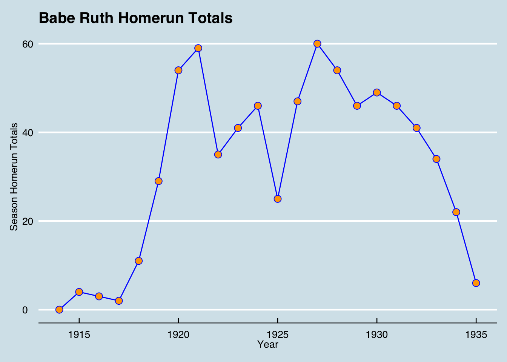

Chapter 9 ggplot
An excellent package for data visualization in R is ggplot2. We will cover some of the basics.
9.1 Installation
To install and load ggplot2, run the following in the console:
install.packages("ggplot2")library(ggplot2)9.2 A Simple Plot
Let’s plot Babe Ruth’s homerun totals through the years as a simple first example. We will need a data frame with two columns: the years and the homerun totals. Here is the dplyr code:
ruth<-Batting %>%
filter(playerID == "ruthba01") %>%
select(yearID,HR)
data.frame(ruth)## yearID HR
## 1 1914 0
## 2 1915 4
## 3 1916 3
## 4 1917 2
## 5 1918 11
## 6 1919 29
## 7 1920 54
## 8 1921 59
## 9 1922 35
## 10 1923 41
## 11 1924 46
## 12 1925 25
## 13 1926 47
## 14 1927 60
## 15 1928 54
## 16 1929 46
## 17 1930 49
## 18 1931 46
## 19 1932 41
## 20 1933 34
## 21 1934 22
## 22 1935 6To begin the plot, we can simply run the following:
ggplot()
A blank, grey canvas should now appear in the lower right panel of RStudio. Let’s say that we want to simply plot points to indicate the homerun totals. We have to add that geometry to the plot:
ggplot() +
geom_point()The canvas will still be blank, because we have not indicated the data frame that holds our data. You can do this within the ggplot() function, but, most of the time, I prefer to do this within the geometry. We will also have to indicate which column in the data frame holds the x variable and which holds the y variable.
ggplot() +
geom_point(data=ruth,aes(x=yearID,y=HR))The aes function stands for “aesthetics”.
You can change color, fill, size, and shape of the points like so:
ggplot() +
geom_point(data=ruth,aes(x=yearID,y=HR),color="blue",fill="orange", size=4,shape=25)Experiment with shapes 1 through 25.
We could now add a line geometry:
ggplot() +
geom_line(data=ruth,aes(x=yearID,y=HR),color="blue") +
geom_point(data=ruth,aes(x=yearID,y=HR),color="blue",fill="orange",size=3,shape=21)There are various themes that come with ggplot. Here is one:
ggplot() +
geom_line(data=ruth,aes(x=yearID,y=HR),color="blue") +
geom_point(data=ruth,aes(x=yearID,y=HR),color="blue",fill="orange",size=3,shape=21) +
theme_minimal()If you install and load the ggthemes package, there are other themes then available to you:
install.packages("ggthemes")library(ggthemes)ggplot() +
geom_line(data=ruth,aes(x=yearID,y=HR),color="blue") +
geom_point(data=ruth,aes(x=yearID,y=HR),color="blue",fill="orange",size=3,shape=21) +
theme_economist()Finally, a few self-explanatory additions:
ggplot() +
geom_line(data=ruth,aes(x=yearID,y=HR),color="blue") +
geom_point(data=ruth,aes(x=yearID,y=HR),color="blue",fill="orange",size=3,shape=21) +
theme_economist() +
ggtitle("Babe Ruth Homerun Totals") +
xlab("Year") +
ylab("Season Homerun Totals")